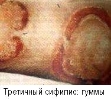
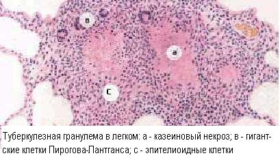
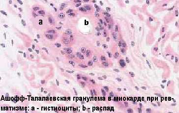
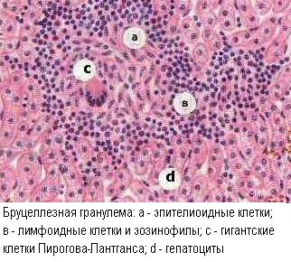
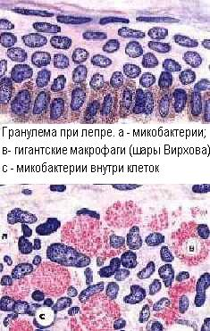

Гранулёматозная гиперчувствительность
Как контактная, так и туберкулиновая форма ГЗТ самоограничиваются вследствие того, что аллерген имеется в минимальном количестве и не преодолевает кожный барьер. При диссеминации антигенов ГЗТ и из-за постоянного пребывания антигена в антигенпредставляющих клетках возможно развитие наиболее клинически важной из реакций ГЗТ - гранулёматоза.
Гранулёма - очаг продуктивного воспаления, управляемого медиаторами ГЗТ (см. также с. 175, 292, 351). Гранулемы наблюдаются при многих инфекционных и паразитарных болезнях (туберкулез, бруцеллез, проказа, листериоз, токсоплазмоз, шистоматоз, висцеральные бластомикозы, кала-азар). Хотя инфекционная этиология саркоидоза не доказана, но типичная гранулёматозная ГЗТ при этом заболевании заставляет думать о, предположительно, микоплазменном происхождении болезни. Гранулемы могут быть и неинфекционного происхождения, например, при аллергопробах Квейма (на саркоидоз) и Мицуды (на проказу) и при провокации введением порошка талька в мягкие ткани.



Гранулёматоз выражается в формировании вокруг антигенпредставляющих фагоцитирующих клеток, содержащих персистирующий аллерген, скопления различных клеточных элементов, привлеченных в очаг цитокинами.

В гранулёмах обязательно имеются Т-лимфоциты, как основные эффекторы ГЗТ, а также эпителиоидные клетки, в которые превращаются макрофаги при длительной активации. В остальном, клеточный состав гранулем разнообразен, так как определяется спектром выделяемых цитокинов и характером аллергена. В качестве конечной стадии развития макрофагов, в гранулёмах разной этиологии нередко присутствуют гигантские многоядерные клетки Пирогова-Лангханса. Обыкновенно, эпителиоидные клетки и макрофаги находятся в центре гранулемы, окруженные лимфоцитами, а иногда и полиморфонуклеарами. На периферии гранулемы могут быть проявления фиброплазии, а в центре - некроз.Привлечение, накопление и активация макрофагов и лейкоцитов в очаге гиперэргического воспаления замедленного типа происходит под влиянием цитокинов-факторов хемотаксиса , затем клетки задерживаются в очаге за счет цитокинов - факторов торможения миграции макрофагов и лейкоцитов. В результате бактерии и вирусы фагоцитируются и перевариваются, а клетки трансплантата - разрушаются.
Среди цитокинов при гранулёматозном воспалении особенно важны ИЛ-3, ИЛ-6 и g-ИФН, обусловливающие активацию макрофагов Т-лимфоцитами (см. таблицу “Цитокины”). Трудно переоценить роль фактора некроза опухолей, поскольку в экспериментах показано, что антитела к ФНО предотвращают формирование гранулём при ГЗТ. Очевидно, именно ФНО служит сигналом , обеспечивающим самоподдерживающийся характер гранулём, так как он способствует превращению макрофагов в эпителиоидные клетки, а последние синтезируют еще больше ФНО.
Вследствие системных эффектов, оказываемых ФНО на организм, при многих гранулёматозных процессах и реакциях ГЗТ пациенты худеют, теряют аппетит и испытывают лихорадку.
Факторы хемотаксиса ответственны за изменение проницаемости сосудов и состояния системы свертывания крови: в месте введения антигена откладывается фибрин, благодаря чему формируется локальное уплотнение.
Наибольшее значение для альтерации при ГЗТ имеет действие Т-киллеров на клетки-мишени при комплементарном взаимодействии их антиген-специфических рецепторов с антигеном на поверхности этих клеток. Цитотоксический Т-лимфоцит содержит в цитоплазме электронноплотные гранулы, наполненные белком перфорином, способным в присутствии ионов кальция "лизировать" плазматическую мембрану (ПМ). Т-киллер выделяет молекулы перфорина, которые встраиваются в плазматическую мембрану клетки-мишени, далее происходит полимеризация перфорина в присутствии ионов Са++ в ПМ образуются трубчатые (торообразные) поры диаметром 5-20 нм. Нарушение целостности ПМ приводит к исчезновению мембранного потенциала и перераспределению ионов и воды в соответствии с электрохимическими градиентами. Поскольку диаметр пор невелик, возникает эффект Ф.Дж.Доннана (1924): крупные молекулы не могут выйти из клетки, а вода и соли из окружающего раствора проникают через поры в ПМ в клетку, в результате клетка набухает и разрывается.
|
|
|
|
|
|